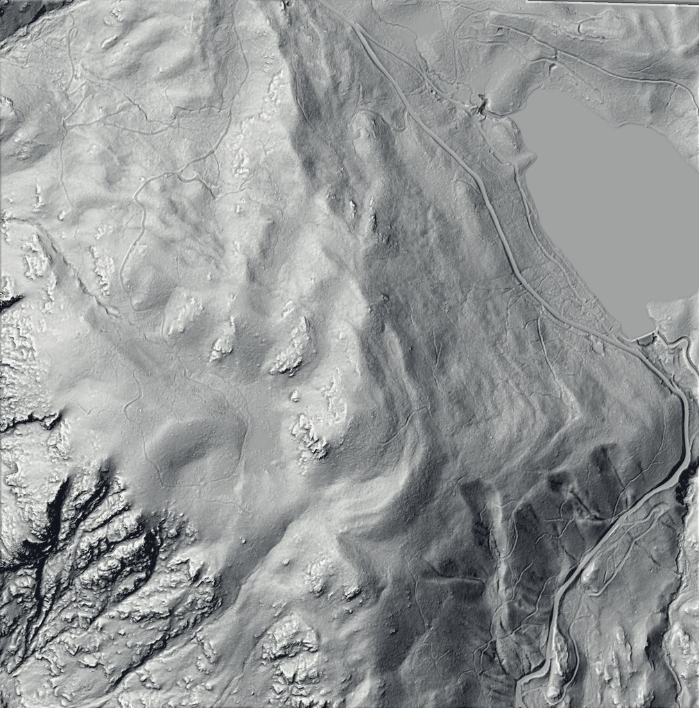
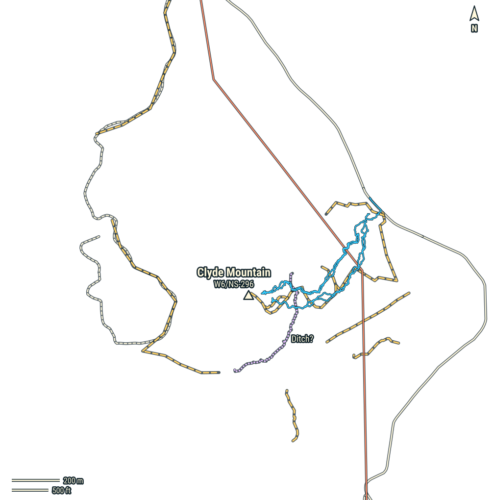
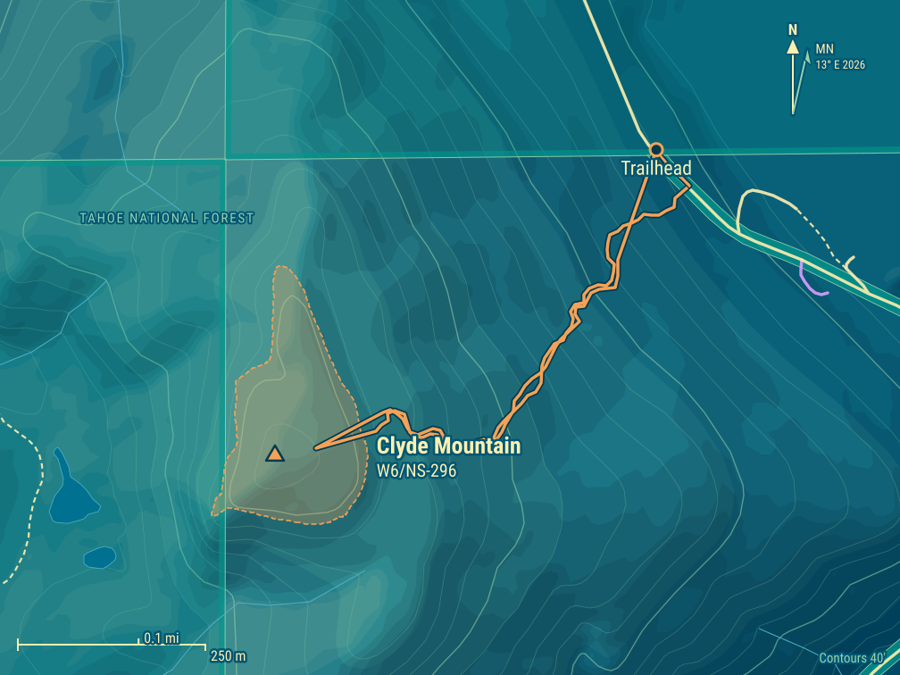
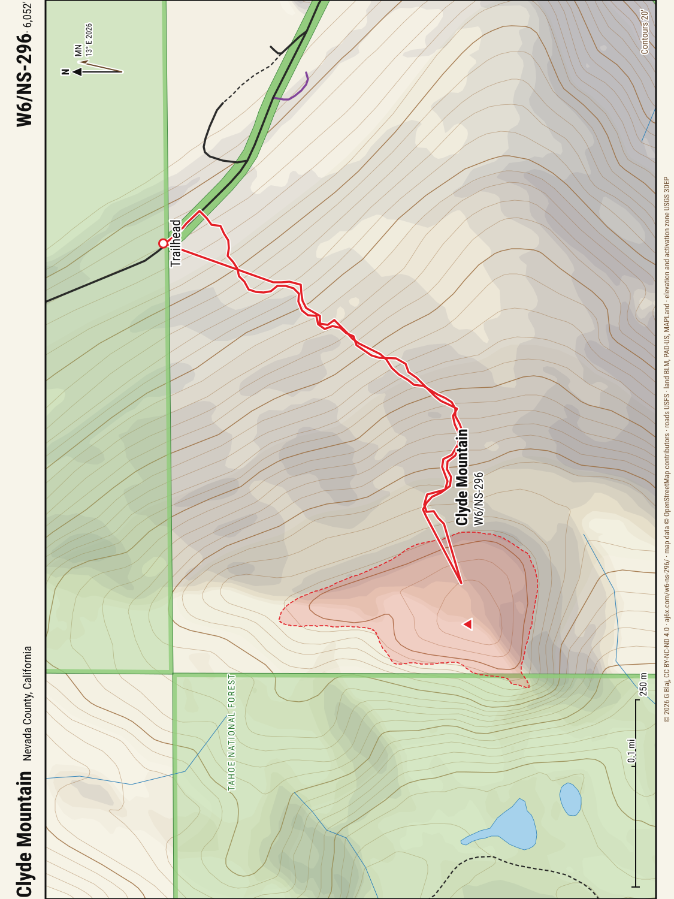
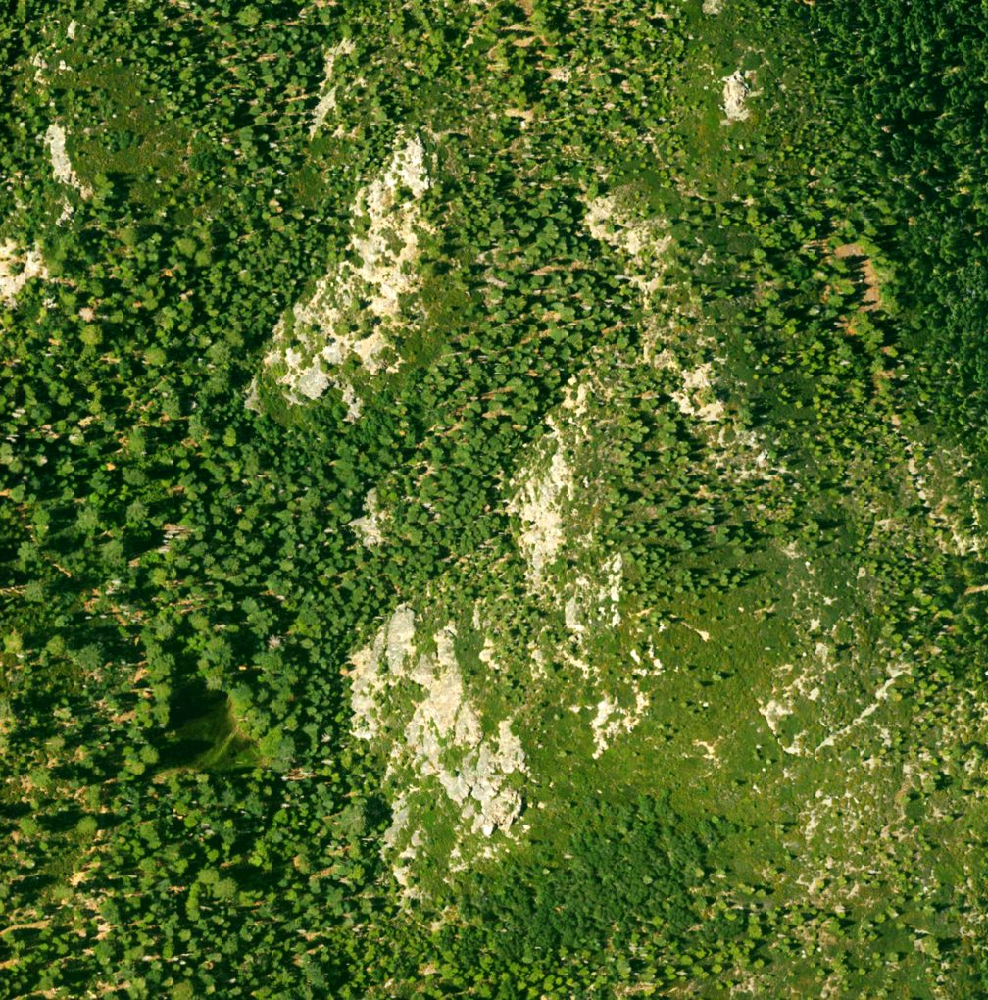
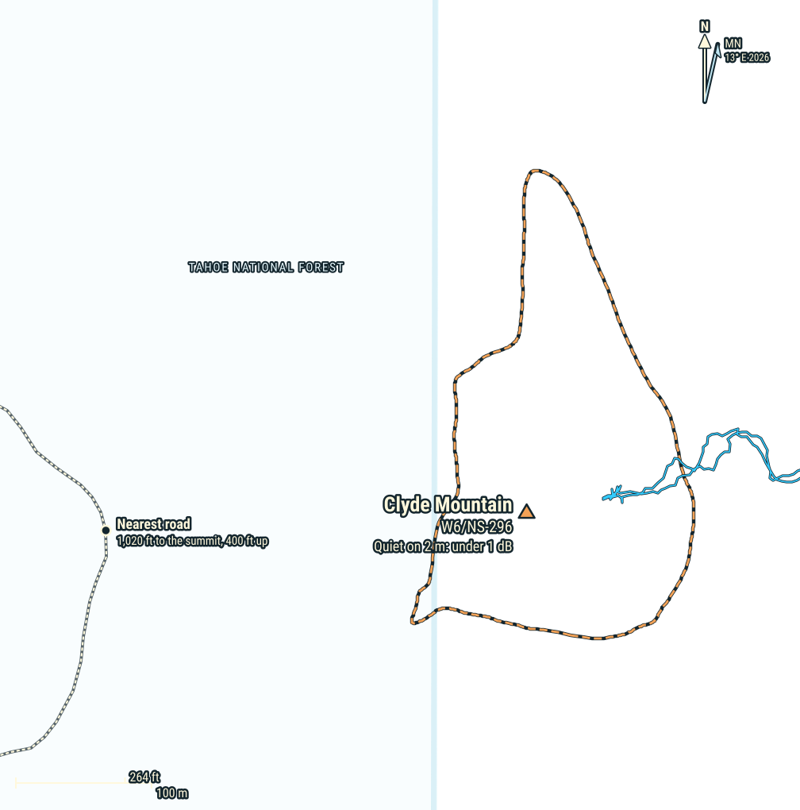
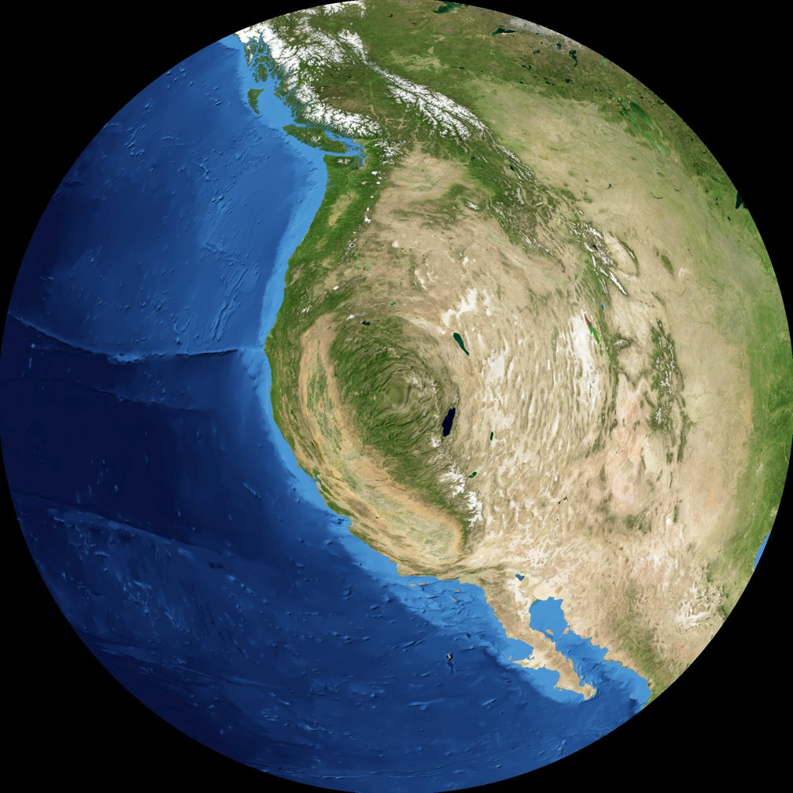
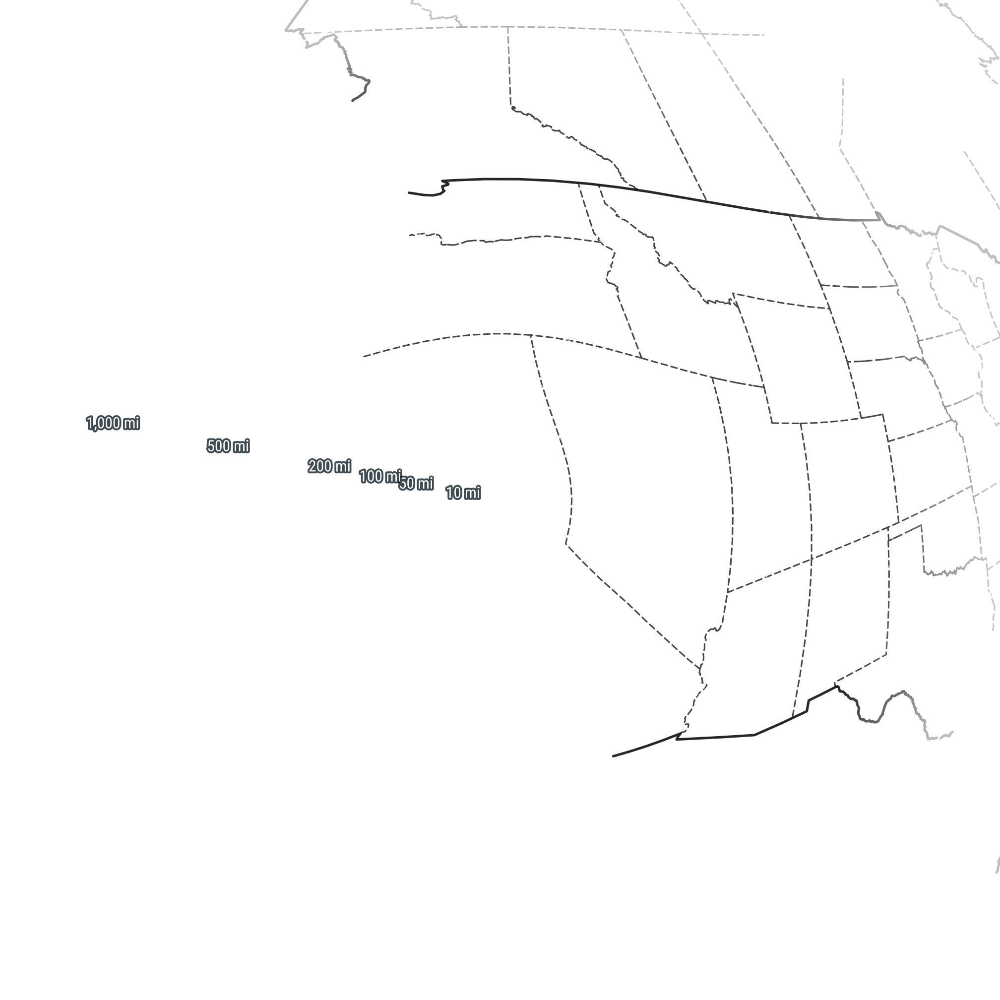

Clyde Mountain W6/NS-296
Summit
- Summit
- W6/NS-296 · Peakbagger
- Points
- 6
- First activation
- KJ6NHF, 28 October 2012
- Elevation
- 6,052′ (1,845 m)
- Prominence
- 619′ (189 m)
- Isolation
- —
- Region
- Northern Sierra
- County
- Nevada, California
- Grid
- CM99qi
- Land
- Tahoe National Forest (Forest Service) 1%; private
- Wilderness
- None
- POTA park
- US-4469 Tahoe National Forest
Route and radio
- Trailhead
- Pullout on Bowman Lake Road, below Fuller Lake's dam, 5,580′ (1,701 m)
- Access
- Paved road
- Red tape
- None posted
- Round trip
- 0.9 mi (1.4 km), 3 h
- Elevation gain
- 450′ (137 m)
- Transport
- Cross-country through forest and brush
- Cell service
- Top: T-Mobile, Verizon good; AT&T fair · all the way up
- Towers, power lines
- power line 440 m NE
RF nearby: 287 licensed stations within 30 km
What to bring, the cheapest radio that still works here, on the AJ6X RF scale: HF: rung 1 of 4, uSDX or QMX, about $150: anything works. VHF: rung 1 of 4, Baofeng, about $25: anything works.
| Station | Service | Frequency | ERP | Where | Terrain | dBµV/m |
|---|---|---|---|---|---|---|
| WQDA849 | business radio | 171.85 MHz | 80 W | 2.5 km SE | in sight | 88 |
| KSS774 | business radio | 160.3–161.4 MHz | 157 W | 5.2 km S | in sight | 85 |
| WNQU828 | business radio | 451.2 MHz | 398 W | 9.4 km SE | in sight | 83 |
| KME270 | business radio | 158.19 MHz | 350 W | 9.4 km SE | in sight | 83 |
| WQOF293 | business radio | 173.2–173.3 MHz | 75 W | 0.9 km E | −14 dB | 82 |
| WPGT730 | business radio | 173.238 MHz | 20 W | 2.5 km SE | in sight | 82 |
| KNNT503 | YO | 855.7–857.3 MHz | 350 W | 10.8 km E | in sight | 82 |
| WPCJ778 | QO | 220.857 MHz | 250 W | 9.4 km SE | in sight | 81 |
| KNKA273 | cellular | 835–891.5 MHz | 233 W | 9.3 km SE | in sight | 81 |
| WNMN395 | business radio | 48.76 MHz | 300 W | 10.8 km E | in sight | 81 |
| WRAL371 | business radio | 173.2–173.3 MHz | 35 W | 3.6 km S | in sight | 80 |
| WPBG927 | public safety | 151.325 MHz | 174 W | 9.4 km SE | in sight | 80 |
Field strength at the summit from each station's power and distance, less an estimate of the terrain in between. A rough guide, by a rung either way: antenna patterns aren't known, and the noise from a site's equipment is in no licence. Data: FCC licences (2026-10-31), NOAA Weather Radio, OpenStreetMap.
Further down: Map · Aerial photo · QSO map · Log
Cell service, 4G, from the carriers' maps: good fair weak
Clyde Mountain is a forested knob above Fuller Lake, off Bowman Lake Road, a few miles north of I-80. No trail, no tower, no register. Just a short, steep push through dense forest, then manzanita, to a rocky top with a view over Lake Spaulding. And who was Clyde? No idea, I couldn’t find out.
This is old water country. The South Yuba Canal, one of the first big water projects in California, was dug in 1854–1858 to sell water to the gold mines of Nevada City and Grass Valley, and Bowman Reservoir, up the same road, was built in 1872–1876 for the hydraulic mines of the San Juan Ridge (NID: the canal, NID: Bowman Dam). Today the water runs through PG&E’s lakes and powerhouses, Lake Spaulding and Fuller Lake among them.
We usually come here with our friend Derek, W7DLZ. It’s a long drive for all of us, and Clyde Mountain has paved access, so we pair it with another summit the same day: in 2024 between Grouse Ridge and Lowell Hill Ridge, in 2026 right after Lowell Hill Ridge.
Getting there
A paved road goes right past the foot of the mountain, and from there it’s straight up, no trail. The mountain is in the Tahoe National Forest. Nothing is posted along the way we go in, and nothing up there looks maintained, or even visited in decades, apart from the odd activator. Forest Service road 18-004, “Clyde Mountain”, comes around the west side from Bowman Lake Road (see Old roads).
- When: all year, going by the SOTA log: activators have been up in every month but February. Expect snow in winter and spring: KC6X postholed up at the end of March.
- Water: none.
- Time: 40–45 minutes up for us, and about as long down. KC6X did it in under half an hour each way.
- Sun: shade all the way up in the dense forest, almost none in the activation zone.
- Toilets: none. The nearest I know of are at the Sierra Discovery Trail (below).
Trailhead
There’s no trailhead as such. We park in one of the pullouts along Bowman Lake Road just past Fuller Lake’s dam, each with room for a car or two. More cars than that? Leave the extras at PG&E’s Sierra Discovery Trail, just off Bowman Lake Road near Highway 20 (the highway from I-80 to Nevada City), and carpool from there.
Cross the road carefully. The first ten feet or so up the bank are the hardest, steep and slippery: walk along a little and look for an easier spot.
The way up
Once up the bank, go straight up. Dense forest, no trail, and old road segments that appear and disappear, all heading off in the wrong direction. So does the power line. Higher up the trees open into manzanita, waist-high in places, and that slows you down more than the slope.

Old roads
Old roads crisscross the mountain under the trees, and they show clearly in the USGS lidar, a laser scan of the bare ground. I traced what I could see. We came across some of them on the way up and walked along them for a bit, but they kept heading off in different directions. This map might help, or not: none of it is tested.
Some of these were jeep trails not that long ago. In 2014 WB0USI described a route that starts at an old four-wheel-drive access, “now blocked off by a dirt berm”, right where two of the traced roads leave Bowman Lake Road, and follows an overgrown jeep trail under the power line. Where that jeep trail turns southwest, a faint bench in the lidar runs the same way, so it’s on the map too. And one line on the east side keeps level around the slope, like an old water ditch. It looks like it would carry water nicely downhill.
One road is on the Forest Service’s own maps: 18-004, “Clyde Mountain”, a high-clearance road that leaves Bowman Lake Road about a mile north of the summit and loops around the west side. At its closest it passes about 250 yards west of the activation zone, so it may be another way up. We haven’t tried it, and I don’t know if it’s gated.


Summit
Getting into the activation zone is easy enough. Getting to the summit itself, the way we come, is nearly impossible without swimming through the manzanita. Greenleaf manzanita, as KC6X identified it in 2026, knee- to waist-high around granite outcrops. Jeff AA6XA pushed through it in 2018 and got a few cuts, long pants and all. The view opens over the lakes to the east, and I-80 to the south.
The manzanita makes setting up tricky. Putting up an antenna is fiddly, and getting the wires back without tangling them hopelessly in the bushes is even harder.


Activations
7 September 2026
- Radio
- Elecraft KX2
- Antenna
- 40m EFHW, inverted L
- Power
- 5 W
- Also on the summit
- W7DLZ
- Activators
- KO6MFP (7), AJ6X (5), KO6MFO (5)
- QSOs
- 17
- Bands
- 40m (17)
- Modes
- CW (17)
- On air
- 00:01–00:40 UTC
Right after Lowell Hill Ridge, with the kids and Derek W7DLZ. This time I pushed higher into the activation zone, for a better, somewhat higher support at the far end of the antenna. On the air at 5:01 PM on 40m CW: five contacts in five minutes, and the Reverse Beacon Network had me on four skimmers, three of them in Utah. Then the kids took over, all on 40m CW: KO6MFP made 7 contacts and KO6MFO 5, in half an hour. 17 contacts for the three of us. Then the summit photo, and down before sunset.
A reminder: keep the antenna wires off the manzanita, or you’ll spend more time untangling than operating.
12 August 2024
- Radio
- Icom IC-705
- Antenna
- 40m EFHW, inverted L
- Power
- 5 W
- Also on the summit
- W7DLZ
- Activator
- AJ6X
- QSOs
- 8
- Bands
- 20m (5), 2m (1), 40m (1), 10m (1)
- Modes
- CW (7), FM (1)
- On air
- 19:59–21:13 UTC
The middle summit of a three-summit day, between Grouse Ridge and Lowell Hill Ridge, with Derek W7DLZ. I set up lower in the activation zone this time. First Derek and I worked each other on 2m FM. Then 40m CW, slow: one contact with K6CPR. 20m CW was better: five contacts in 12 minutes. 2024 was the year of SOTA’s 10 metre challenge, so I tried 10m too, and got one: Peter WB6POT, at 2:13 PM. 8 contacts in all, on the IC-705.
A reminder: I tried 10m for the challenge, but also because in 2024, near the top of the solar cycle, the band was open a lot more often. When it’s open, give it a few minutes.
And back
Going back down, good luck finding the exact same way, even with the GPS track from the way up.
Map


Cell service, 4G, from the carriers' maps: good fair weak
Aerial photo


QSO map


Azimuthal equidistant, power 0.51 distance scale, out to 2,558 km, centred on the summit: every QSO is a straight line, true in direction. Chasers at their location on QRZ, to about 5 km; summit-to-summit contacts at the other summit; 1 with those on the summit with us at the centre, under its triangle. 1 QSO without a location left out. Rings: what the skimmers of the Reverse Beacon Network heard of our calls during the activations, each skimmer at the centre of its grid square (1 from skimmers without a listed square). Earth: NASA Blue Marble. Note 3.
Log
7 September 2026 · 17 QSOs
| UTC | Activator | Call | Band | Mode |
|---|---|---|---|---|
| 00:01 | AJ6X | WB6POT | 40m | CW |
| 00:02 | AJ6X | W4WJK | 40m | CW |
| 00:03 | AJ6X | KK6WT | 40m | CW |
| 00:04 | AJ6X | NT6E | 40m | CW |
| 00:06 | AJ6X | WB6JWB | 40m | CW |
| 00:10 | KO6MFP | KK6WT | 40m | CW |
| 00:11 | KO6MFP | W4WJK | 40m | CW |
| 00:12 | KO6MFP | WW7D | 40m | CW |
| 00:13 | KO6MFP | K5DEZ | 40m | CW |
| 00:26 | KO6MFP | NT6E | 40m | CW |
| 00:27 | KO6MFO | NT6E | 40m | CW |
| 00:28 | KO6MFO | WW7D | 40m | CW |
| 00:31 | KO6MFO | K6CPR | 40m | CW |
| 00:32 | KO6MFP | K6CPR | 40m | CW |
| 00:34 | KO6MFO | N6EK | 40m | CW |
| 00:39 | KO6MFO | KO6TX | 40m | CW |
| 00:40 | KO6MFP | KO6TXI | 40m | CW |
12 August 2024 · 8 QSOs
| UTC | Call | Band | Mode |
|---|---|---|---|
| 19:59 | W7DLZ | 2m | FM |
| 20:29 | K6CPR | 40m | CW |
| 20:54 | WW7D | 20m | CW |
| 20:57 | WB6POT | 20m | CW |
| 21:03 | K6HPX | 20m | CW |
| 21:04 | AA7OY | 20m | CW |
| 21:06 | AK5SD | 20m | CW |
| 21:13 | WB6POT | 10m | CW |
Notes
- Not tested: traced by hand from lidar elevation data alone. The dashed lines are what looks like old roads in the shape of the ground; on the ground they may be overgrown, blocked, washed out, or lead nowhere. Old road (lidar, unverified)Ditch? (lidar, unverified)Forest Service road, high clearanceOur tracks, 2024 and 2026Power line (OpenStreetMap) The high-voltage power line has its clearing kept free of trees, so it is open walking, but it runs the wrong way for the summit: useful for a stretch at most. Two of the traces in the northwest turned out to be Forest Service road 18-004, "Clyde Mountain", drawn here as the Forest Service maps it. Neither the 1891 nor the 1955 USGS topographic map shows any road on the mountain, so these are probably not that old, or were too small to map. Relief: USGS 3DEP 1 m lidar · roads: U.S. Forest Service · power line: OpenStreetMap.
- About 1% of the activation zone is on public land or an access easement. RFI, estimated for a Kenwood TH-D75A on 2 m with its stock antenna: under 1 dB of desense anywhere in the activation zone. From FCC licences and the terrain, not measured. Photo: USDA National Agriculture Imagery Program (NAIP), from the USGS National Map · land: BLM Surface Management Agency, PAD-US, MAPLand easements · ways: OpenStreetMap, U.S. Forest Service, USGS · activation zone from USGS 3DEP · RFI: FCC licences over USGS 3DEP
- Azimuthal equidistant, power 0.51 distance scale, out to 2,558 km, centred on the summit: every QSO is a straight line, true in direction. Chasers at their location on QRZ, to about 5 km; summit-to-summit contacts at the other summit; 1 with those on the summit with us at the centre, under its triangle. 1 QSO without a location left out. Rings: what the skimmers of the Reverse Beacon Network heard of our calls during the activations, each skimmer at the centre of its grid square (1 from skimmers without a listed square). Earth: NASA Blue Marble.